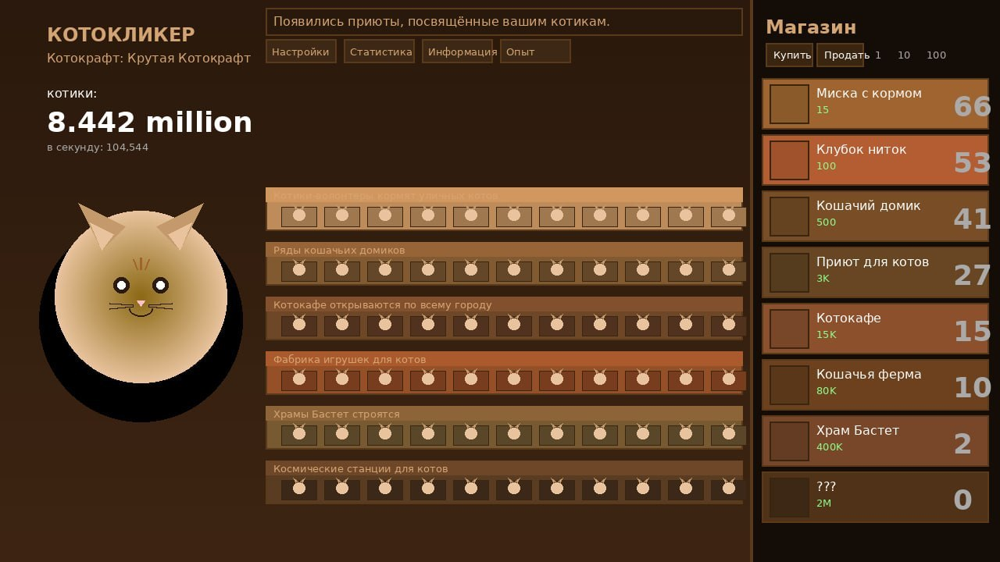

О проекте
Котокликер — это браузерная idle-игра, вдохновлённая классическим Cookie Clicker. Вместо печенек здесь котики, а вместо фабрик — приюты и котокафе.
Проект основан в .
Как играть
Всё просто: кликай по большому рыжему коту в центре экрана — и зарабатывай «котиков». Накопленные котики можно потратить в магазине на различные улучшения.
Каждое купленное здание автоматически генерирует пассивный доход. Чем дороже здание — тем больше котиков в секунду оно приносит.
Этапы развития вашей империи
- Начинаете с нуля — только вы и ваш клик
- Покупаете первую миску с кормом
- Открываете котокафе и нанимаете бариста
- Строите храм Бастет — древнеегипетской богини-кошки
- Запускаете космическую станцию для котиков
Скриншот концепта
